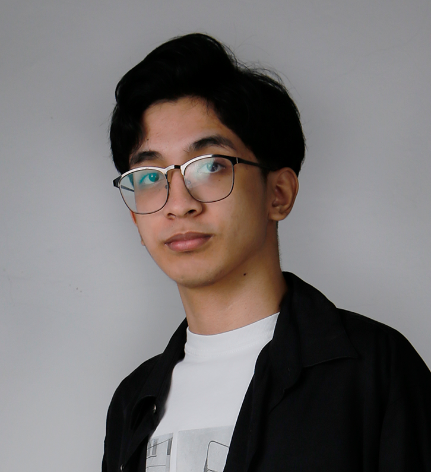

Greetings!
Welcome to my My Profile
It is my pleasure to introduce my self.
Hello! I am Ian, a multimedia student in the College of Saint Benilde. I specialize in graphic design, photography, and 3d modeling.
Birthday: September 18, 2002
Location: Metro Manila, Philippines
My Capabilities
Graphic Design - Programs : Illustrator and Photoshop
Photography - Programs: Photoshop
3D Modeling - Programs: 3DS Max